Quá trình quyết định Markov
Bài 03 · Học tăng cường
Học kỳ 1 · Năm học 2026–2027
Trường Đại học Công nghệ · Đại học Quốc gia Hà Nội
Nội dung bài học
- Từ tương tác đến mô hình xác suất
- Chuỗi Markov
- Quá trình phần thưởng Markov
- Phương trình Bellman
- Quá trình quyết định Markov (MDP) và chính sách cố định
- Giá trị trạng thái và giá trị hành động
- Tổng hợp và vận dụng
Từ tương tác đến mô hình xác suất
Cùng trạng thái và hành động có thể cho kết quả khác nhau.
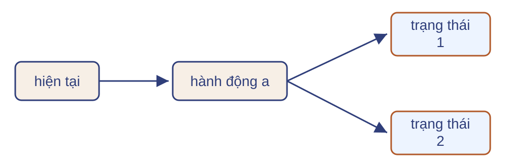
Một mô hình, nhiều quỹ đạo
Hai đường đi từ cùng điểm xuất phát trên đồ thị sinh viên.
C1, C2, C3 là ba buổi học; Pass là thi đạt; Facebook là dùng mạng xã hội; Sleep là ngủ.
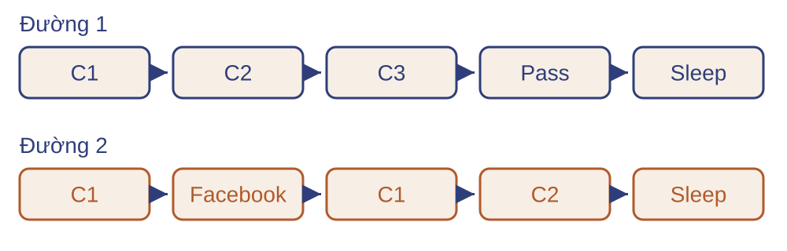
Ba lớp mô hình
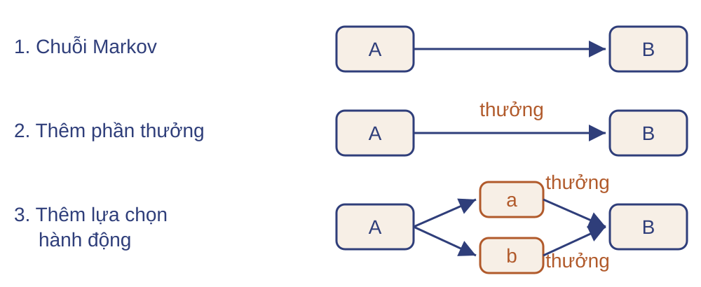
Từ mô hình và chính sách, tính kỳ vọng của tổng thưởng.
Câu hỏi kiểm tra
Câu hỏi:
- Quan sát đúng trạng thái có đồng nghĩa biết xác suất chuyển không?
- Cùng trạng thái có thể dẫn tới các trạng thái kế tiếp khác nhau không?
Chuỗi Markov
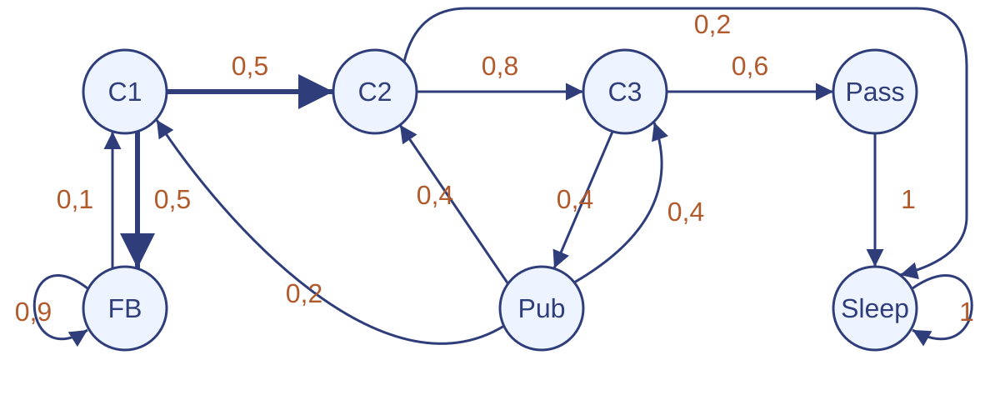
Một quy luật chuyển có thể sinh nhiều quỹ đạo.
Một ngày của sinh viên
Một quỹ đạo: C1 → C2 → C3 → Pub → C2 → Sleep. FB: mạng xã hội; Pub: giải trí.
Xác suất chuyển và tính Markov
Chuỗi Markov hữu hạn đồng nhất theo thời gian: $(\mathcal S,P)$, với $|\mathcal S|=n$.
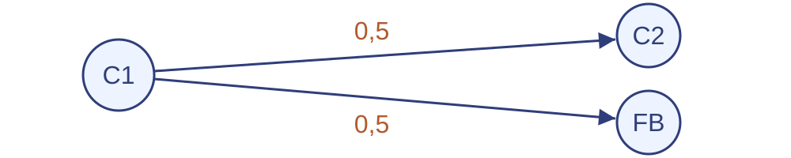
Markov: khi biết trạng thái hiện tại, lịch sử không đổi phân phối bước tới.
Từ đồ thị đến ma trận chuyển
| C1 | C2 | C3 | Pass | Pub | FB | Sleep | |
|---|---|---|---|---|---|---|---|
| C1 | 0 | 0,5 | 0 | 0 | 0 | 0,5 | 0 |
| C2 | 0 | 0 | 0,8 | 0 | 0 | 0 | 0,2 |
| C3 | 0 | 0 | 0 | 0,6 | 0,4 | 0 | 0 |
| Pass | 0 | 0 | 0 | 0 | 0 | 0 | 1 |
| Pub | 0,2 | 0,4 | 0,4 | 0 | 0 | 0 | 0 |
| FB | 0,1 | 0 | 0 | 0 | 0 | 0,9 | 0 |
| Sleep | 0 | 0 | 0 | 0 | 0 | 0 | 1 |
$P_{ij}\ge0$, $\sum_jP_{ij}=1$. Sleep hấp thụ vì $P_{\text{Sleep, Sleep}}=1$.
Phân phối sau một bước
Phân phối ban đầu: 50% ở C1, 50% ở FB.
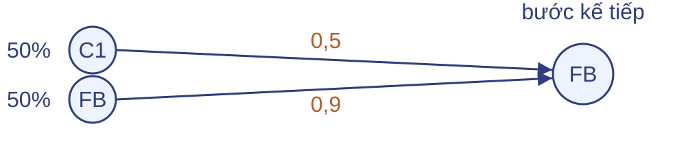
Xác suất tới FB: $0{,}5\times0{,}5+0{,}5\times0{,}9=0{,}7$.
$\mu_t$ là véc-tơ cột: $\mu_{t+1}=P^{\mathsf T}\mu_t$.
Câu hỏi kiểm tra
Câu hỏi:
- $P$ có phải ma trận chuyển hợp lệ không? Vì sao?
- Trạng thái nào hấp thụ?
- Từ $s_1$, phân phối sau một bước là gì?
Quá trình phần thưởng Markov
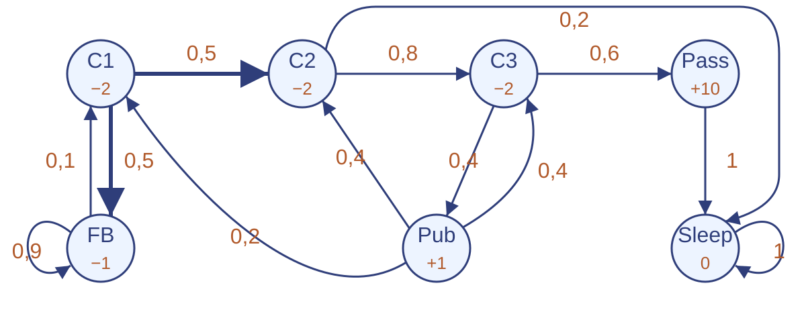
Mỗi bước chuyển đi kèm một phần thưởng.
Phần thưởng trên từng bước
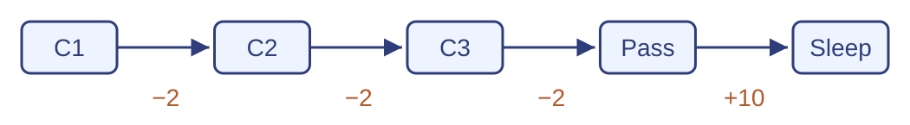
Trong ví dụ này, thưởng của mỗi bước do trạng thái xuất phát quyết định.
+10 nhận trên bước Pass → Sleep; sau Sleep, thưởng bằng 0.
Định nghĩa quá trình phần thưởng Markov
- $\mathcal S$: tập $n$ trạng thái; $P$: ma trận chuyển.
- $r(s)=\mathbb E[R_{t+1}\mid S_t=s]$: thưởng trung bình một bước.
- $\gamma\in[0,1]$: hệ số chiết khấu.
$r\in\mathbb R^n$ chứa các kỳ vọng, còn $R_{t+1}$ là phần thưởng quan sát được.
Hai quỹ đạo, hai tổng thưởng
$G_t=\sum_{k=0}^{\infty}\gamma^k R_{t+k+1}$. Với $\gamma=\tfrac12$:
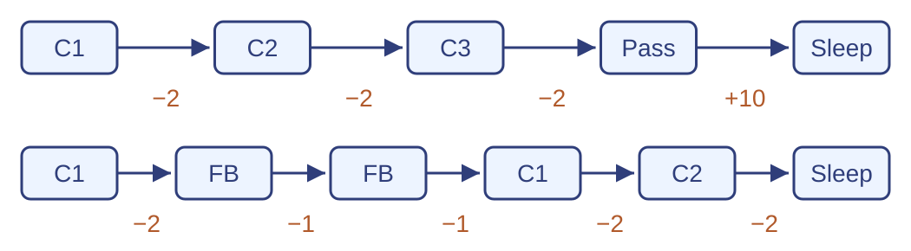
Giá trị của một trạng thái
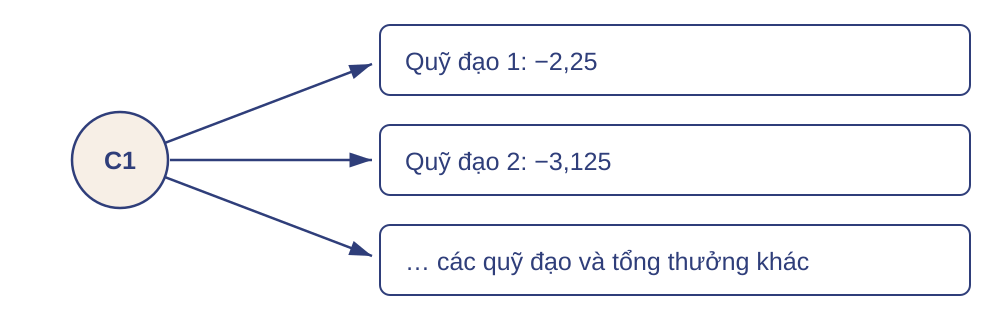
Kỳ vọng tính theo xác suất do mô hình sinh. $v(\mathrm{Sleep})=0$.
Câu hỏi kiểm tra
Câu hỏi:
- $r(s)$, $G_t$ và $v(s)$ khác nhau thế nào?
- Tính tổng thưởng của đường C1→C2→Sleep với $\gamma = 1/2$.
- Một giá trị mẫu $G$ có bằng $v(s)$ không?
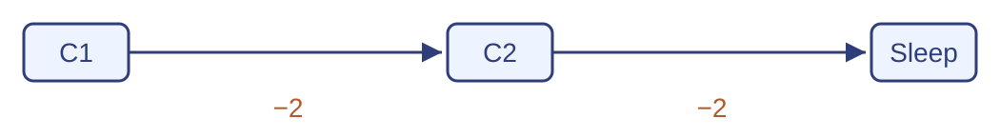
Phương trình Bellman
Tính giá trị từ một bước chuyển và phần đường còn lại.
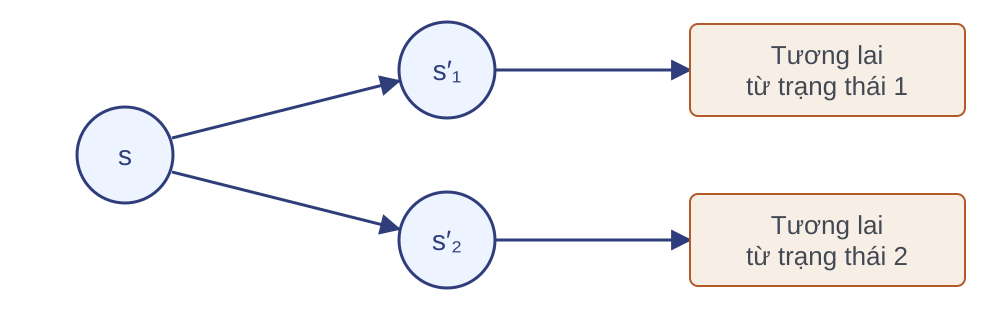
Một bước và phần còn lại
Bước rời C3 nhận $-2$; hệ số chiết khấu $\gamma=0{,}9$.
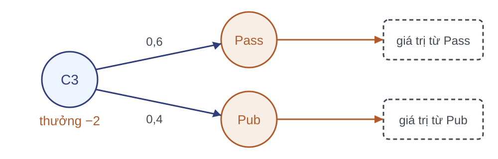
Mỗi hộp là kỳ vọng của tổng thưởng tính từ trạng thái tương ứng.
Tách phần thưởng tích lũy
Dòng 1: định nghĩa. Dòng 2: đặt $\gamma$ ra ngoài. Dòng 3: nhận diện tổng bắt đầu ở $t+1$.
Từ tổng thưởng đến giá trị
Với tổng thưởng khả tích, kỳ vọng lặp: trung bình trong từng nhóm có cùng trạng thái kế tiếp, rồi trung bình giữa các nhóm.
Bellman cho quá trình phần thưởng Markov
Quá trình có thưởng thỏa Markov, quy luật không đổi theo thời gian:
Trở lại ví dụ: $v(\text{C3})=-2+0{,}9\,[\,0{,}6\,v(\text{Pass})+0{,}4\,v(\text{Pub})\,]$.
Hệ Bellman ba trạng thái
Dùng lại ma trận chuyển ba trạng thái ở phần 2; thêm $r=(1,-1,0)^{\mathsf T}$, $\gamma=0{,}9$, ký hiệu $v_i=v(s_i)$:
Quy ước: $s_3$ kết thúc với thưởng $0$ sau đó; hàng 1 chứa $v_1$ ở hai vế do có cạnh tự lặp.
Dạng ma trận và nghiệm
Với $v,r\in\mathbb R^n$, $I$ là ma trận đơn vị:
Ví dụ ba trạng thái rút còn:
Điều kiện để giá trị hữu hạn
Nếu $|R_{t+1}|\le M$ và $0\le\gamma<1$:
Cận từ tổng hình học $M(1+\gamma+\gamma^2+\cdots)$.
Với $\gamma=1$: thưởng bị chặn và kỳ vọng thời gian kết thúc hữu hạn là điều kiện đủ.
Ví dụ vòng lặp nhận $+1$ mỗi bước: tổng không chiết khấu phân kỳ.
Câu hỏi kiểm tra
Câu hỏi:
- Bước nào cần Markov trong suy diễn Bellman?
- Viết phương trình cho $s_2$ của bài ba trạng thái, với hàng $P$ của $s_2$ là $(0{,}2;\,0{,}3;\,0{,}5)$ và $r(s_2)=-1$, $\gamma=0{,}9$.
- Vòng lặp thưởng $+1$, $\gamma=1$ có giá trị hữu hạn không?
MDP và chính sách cố định
Tại C2, tác tử chọn học tiếp hoặc kết thúc.
Lựa chọn làm thay đổi phản hồi
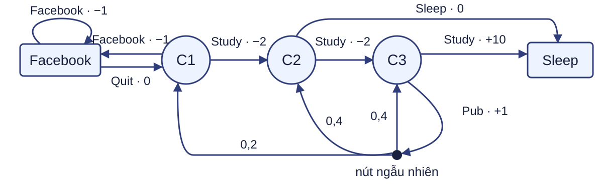
Ví dụ 5 trạng thái, khác MRP 7 trạng thái: Pub là hành động; từ C3, Study nhận +10 rồi kết thúc. Nút tròn nhỏ là chỗ phân nhánh của môi trường, không phải trạng thái.
Quá trình quyết định Markov
MDP hữu hạn: $(\mathcal S,\mathcal A,p,\gamma)$. $a\in\mathcal A(s)$; $r\in\mathcal R$ với $\mathcal R$ hữu hạn.
Markov: phản hồi chỉ phụ thuộc $(s,a)$, không cần lịch sử trước đó.
Quy luật $p$ không đổi theo thời gian; $0\le\gamma\le1$.
Thưởng trung bình một bước: $r(s,a)=\sum_{s',r}r\,p(s',r\mid s,a)$.
Cố định một chính sách
Tại C2, chọn Study với $0{,}75$ và Sleep với $0{,}25$.
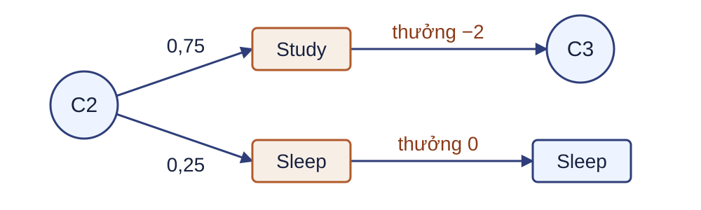
Xét chính sách Markov không đổi theo thời gian, với $\pi(a\mid s)\ge0$.
Từ MDP đến quá trình phần thưởng Markov
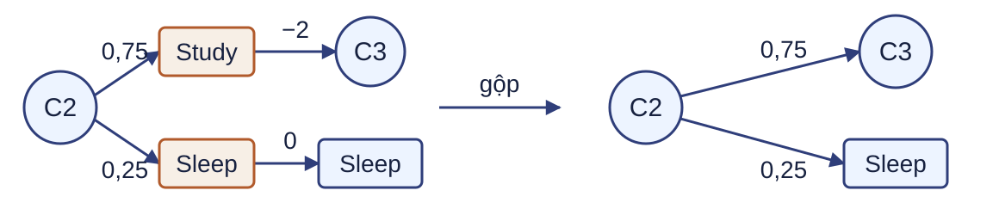
Mô hình dưới chính sách
Phân phối chung dưới chính sách $\pi$:
$v_\pi$ là giá trị của MRP dưới $\pi$: $v_\pi=r^\pi+\gamma P^\pi v_\pi$.
Câu hỏi kiểm tra
Câu hỏi:
- Cố định $\pi$, ngẫu nhiên nào còn trong quá trình?
- Nếu tại C2 luôn chọn Study, hàng chuyển và thưởng trung bình là gì?
- Biết mô hình có đồng nghĩa đã biết chính sách tốt nhất không?
Giá trị trạng thái và giá trị hành động
Từ cùng C2, đánh giá riêng từng lựa chọn đầu tiên.

Ấn định hành động đầu tiên
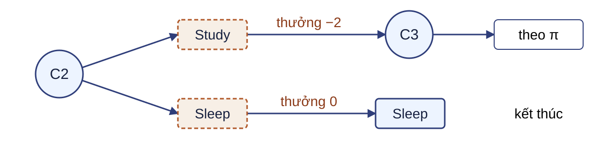
Ấn định hành động đầu; từ bước kế tiếp, tác tử theo cùng chính sách.
Giá trị hành động tính cả tương lai, không chỉ thưởng tức thời.
Định nghĩa giá trị hành động
Từ $s$, để chính sách chọn mọi hành động:
Ấn định $a$ một lần tại $s$, rồi tiếp tục theo $\pi$:
Dòng thứ hai dùng quy ước “thực hiện $a$ rồi theo $\pi$”, kể cả khi $\pi(a\mid s)=0$.
Từ giá trị hành động đến giá trị trạng thái
Minh họa tại C2: $v_\pi(C2)=0{,}75\,q_\pi(C2,\text{Study})+0{,}25\,q_\pi(C2,\text{Sleep})$.
Giá trị hành động từ phản hồi một bước
Markov và quy luật không đổi: $\mathbb E[G_{t+1}\mid s,a,s',r]=v_\pi(s')$.
Bellman kỳ vọng cho giá trị hành động
Tại thời điểm kế tiếp, dùng quan hệ v theo q:
Tổng ngoài: trung bình theo phản hồi của hành động hiện tại. Tổng trong: trung bình theo hành động tiếp theo a′. Với s′ kết thúc, tổng trong bằng 0.
Bellman kỳ vọng cho giá trị trạng thái
Nhóm số hạng có r tạo $r^\pi(s)$; nhóm số hạng có $s'$ tạo $P^\pi_{ss'}$ — đúng Bellman của MRP cảm sinh ở phần 5.
Vận dụng với xe đua
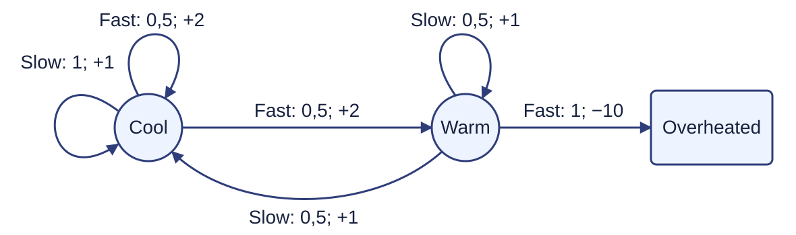
Nhãn cạnh: hành động, xác suất; thưởng. Chính sách đều; $\gamma=1$.
Đã cho: $v_\pi(\mathrm{Cool})=0$, $v_\pi(\mathrm{Warm})=-6$, $v_\pi(\mathrm{Overheated})=0$.
Câu hỏi kiểm tra
Mô hình tại Warm, $\gamma=1$: Warm–Slow → Cool hoặc Warm, mỗi nhánh $p=0{,}5$, $r=1$. Warm–Fast → Overheated, $r=-10$ (quy ước: không cộng thêm $+2$). Chính sách đều trên mọi trạng thái chưa kết thúc. Đã cho: $v_\pi(\text{Cool})=0$, $v_\pi(\text{Warm})=-6$, $v_\pi(\text{Overheated})=0$.
Câu hỏi:
- Tính $q_\pi(\text{Warm},\text{Slow})$ và $q_\pi(\text{Warm},\text{Fast})$.
- Từ hai giá trị đó, tính $v_\pi(\text{Warm})$.
- Trong Bellman kỳ vọng, vì sao lấy trung bình theo π thay vì chọn giá trị lớn nhất?
Tổng hợp và vận dụng
Mô hình đã biết và chính sách cố định cho phép tính giá trị dài hạn.
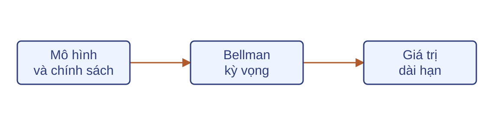
Từ mô hình đến phương trình giá trị
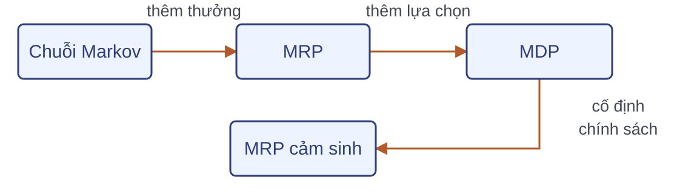
Lấy trung bình theo $\pi$ để có $P^\pi,r^\pi$, rồi giải:
Bài tập và bước tiếp theo
| Bài tập hw02 | Nhiệm vụ | Kết quả |
|---|---|---|
| Bài 3 | Kiểm tra ma trận; lập hệ giá trị | Ma trận hợp lệ, hệ Bellman |
| Bài 4 | Cố định chính sách; gộp mô hình | $P^\pi,r^\pi,v_\pi$ |
| Bài 7 | Tính giá trị trạng thái từ giá trị hành động | $v_\pi$ từ $q_\pi$ và $\pi$ |
| Bài 8 | Viết và giải Bellman kỳ vọng | Hệ phương trình và nghiệm |
Bài 04: Bellman tối ưu và quy hoạch động; tiếp tục với bài 9.
Câu hỏi kiểm tra
Câu hỏi:
- Chỉ biết xác suất chuyển $p(s'\mid s,a)$ và chính sách $\pi$, còn cần gì để tính $v_\pi$?
- $G_t$, $v_\pi(s)$ và $q_\pi(s,a)$ khác nhau thế nào?
- Với $\gamma=1$, chỉ có một trạng thái kết thúc đã đủ bảo đảm giá trị hữu hạn chưa?